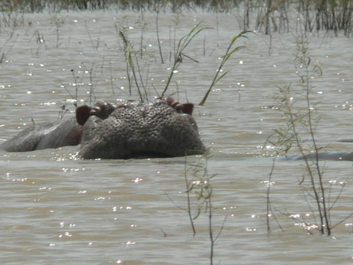

Historique de la mare
La marre aux Hippopotames est un parc national du Burkina faso.
Elle a été cree en 1937 et reconnu par l’Unesco en tant que reserve de biosphere depuis le 30juin 1937.
Description du NomDuPatrimoine
situé a 66 kilometre au Nord-Ouest de bobo-Dioulasso et a 25 kilometre du chef de lieu du departement de Satiri. il s'agit d'un point d'eau de plusieurs kilomètre de long dans le lequel vivent une importante population d'hippopotames. Cette mare est équipée d'une barqued'une capacité de 15 personnes destinée
a la visite-decouverte